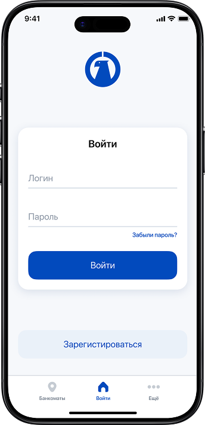
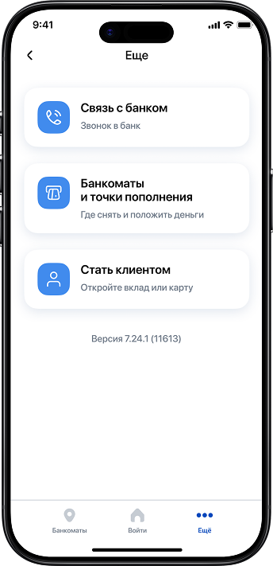
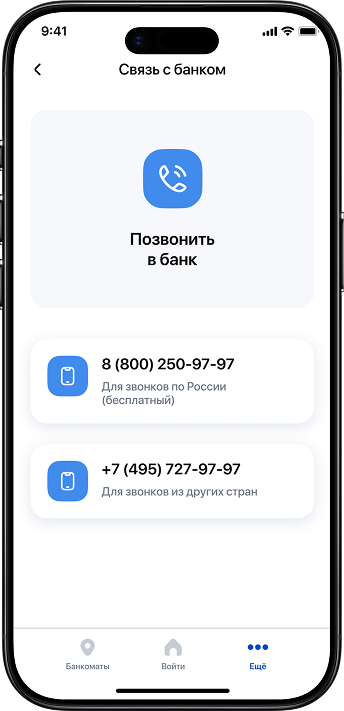
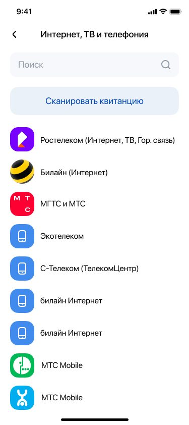
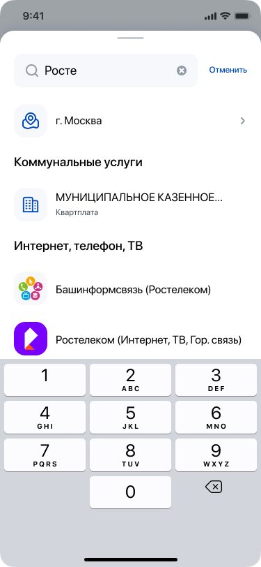
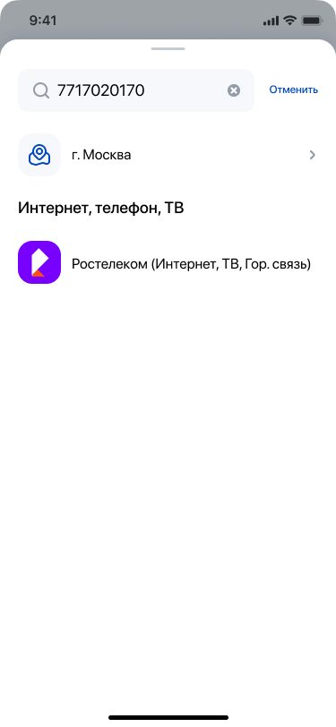
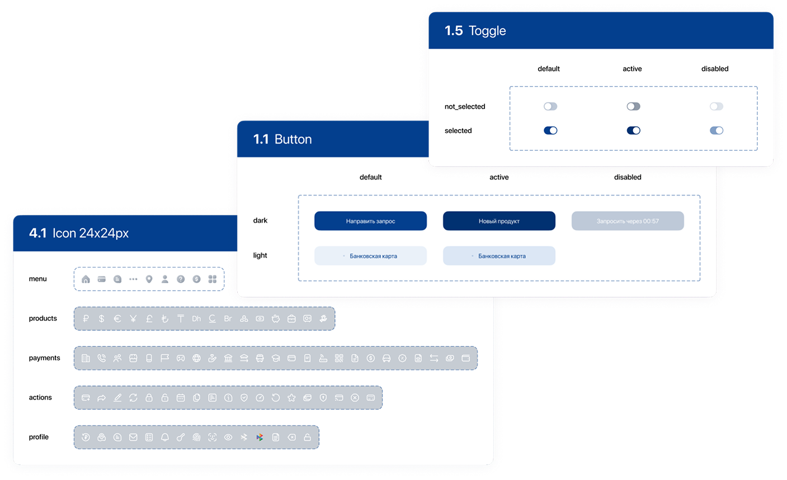

Fintech · Mobile · Case Study
ДБО — развитие и масштабирование мобильного банка
Мобильный банк с растущей пользовательской базой находился в фазе активного масштабирования после внедрения новой дизайн-концепции.
Основная задача — обеспечить системное развитие интерфейса, пересобрать ключевые пользовательские сценарии и подготовить продукт к дальнейшему росту функциональности без потери консистентности.
Отвечала за полный цикл проектирования: анализ сценариев, структурирование пользовательских потоков, проработку взаимодействия и внедрение решений в продакшен.
Работала в тесной связке с продакт-менеджером, аналитиками и командой разработки. В ряде задач выступала драйвером системных изменений и инициатором пересмотра логики интерфейса.
Пересобрать сценарий входа с учётом требований безопасности, аналитики и различных пользовательских состояний. Снизить количество фрикций и повысить предсказуемость процесса.



Проанализированы точки выхода пользователей, переработана логика переходов и состояния ошибок. Выстроена прозрачная структура сценария при сохранении требований безопасности и аналитического трекинга.
Адаптировать главный экран под новый этап развития продукта: увеличить количество функциональности, сохранив читаемость и управляемость интерфейса.


Пересобрана иерархия блоков с акцентом на приоритетные пользовательские действия. Сформирована устойчивая логика расположения сервисов и синхронизированы паттерны взаимодействия.
Структурировать раздел с учётом сегментации операций, фильтрации и быстрого доступа к ключевым действиям.


Выстроена логика разделения сценариев, реализована система фильтров и быстрых действий. Экраны адаптированы под обновлённый UI и интегрированы в компонентную систему.
Спроектировать новый функциональный модуль без готовой концепции и формализованных требований. Самостоятельно определить пользовательские сценарии и структуру раздела.


Проведён конкурентный анализ, сформированы пользовательские сценарии, определена логика статусов и состояний. Разработаны hi-fi интерфейсы с масштабируемой архитектурой. Модуль запущен в продакшен.
В разделе «Платежи» отсутствовал глобальный поиск: пользователь мог найти провайдера только вручную, листая списки категорий и подкатегорий. Поиска по названию или ИНН не существовало вовсе.



Спроектирована полная навигационная архитектура: категории → подкатегории → список провайдеров с выбором региона. Добавлен поиск по наименованию и ИНН на всех уровнях иерархии, логика приоритизации результатов по релевантности и состояния пустого поиска. Основано на конкурентном анализе Альфа Банка, Сбера и Т-Банка. Функциональность запущена в продакшен.

Стандартизация компонентов, выравнивание отступов и типографики, внедрение единых паттернов взаимодействия. Обеспечена визуальная и логическая целостность интерфейса при расширении функциональности.
- Усилена системность и масштабируемость интерфейса
- Оптимизированы критические пользовательские сценарии
- Разработан и внедрён новый функциональный модуль «Налоги и штрафы»
- Спроектирована навигационная архитектура поиска по услугам — от анализа конкурентов до продакшена
- Сформирована устойчивая компонентная база для дальнейшего развития продукта